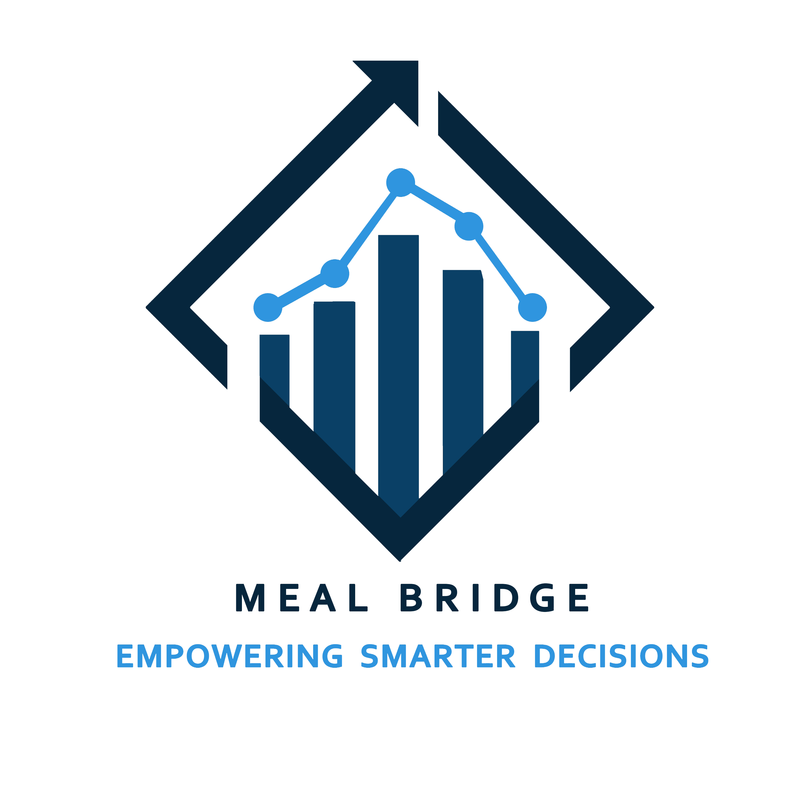

We strengthen organizations through practical Monitoring, Evaluation, Accountability and Learning solutions, professional development, and strategic partnerships.

MEAL Bridge LLC was founded to close the gap between technical MEAL knowledge and practical implementation. We believe organizations achieve greater impact when they have strong systems, capable teams, and a culture of continuous learning.
Our experience spans humanitarian and development contexts, supporting organizations in designing systems, strengthening accountability, improving evidence-based decision-making, and building sustainable organizational capacity.
We combine technical excellence, regional experience, and practical implementation to help organizations build stronger MEAL systems that continue creating value long after an assignment ends.
Built on years of practical humanitarian and development experience across Monitoring, Evaluation, Accountability, and Learning.
Our methodologies align with internationally recognized MEAL principles while remaining practical and adaptable.
We understand the operational realities of humanitarian and development work across Syria and the wider MENA region.
We deliver practical solutions, usable tools, and organizational systems designed to be implemented—not simply documented.
Our mission and vision define why MEAL Bridge LLC exists and the future we are working to create for organizations, professionals, and communities.
To strengthen organizations through practical Monitoring, Evaluation, Accountability, and Learning consulting, training, and innovative solutions that improve performance, transparency, and evidence-based decision-making.
To become the leading MEAL consulting and capacity development partner across the MENA region, enabling organizations to create sustainable, measurable, and people-centered impact.
At MEAL Bridge LLC, our values influence every recommendation, every partnership, and every decision we make.
We uphold honesty, transparency, confidentiality, and ethical practice in everything we do.
Every recommendation is supported by reliable data, practical analysis, and measurable results.
Strong systems exist to improve outcomes for organizations, communities, and the people they serve.
We continuously explore better methods, digital solutions, and emerging technologies to improve MEAL practice.
Learning is integrated into every project, strengthening future performance and long-term sustainability.
International standards are adapted to local realities to ensure practical, relevant, and sustainable solutions.
We believe successful consulting is measured not by the reports we deliver, but by the capabilities organizations retain long after an assignment is complete.
Every organization is unique. We begin by understanding your people, systems, objectives, and operational realities before recommending solutions.
We build practical MEAL systems that fit your organization—not generic frameworks copied from elsewhere.
Every assignment includes mentoring, coaching, and knowledge transfer to strengthen your internal capacity.
Stronger systems lead to better decisions, greater accountability, improved programme quality, and lasting organizational performance.
Every assignment follows a proven methodology designed to understand your organization, strengthen your systems, build internal capacity, and create long-term impact.
We begin by understanding your organization, strategic objectives, operational context, stakeholders, existing systems, and key challenges.
We review your current MEAL systems, identify strengths, gaps, risks, opportunities, and organizational priorities.
Practical, context-specific solutions are developed using international standards and evidence-based approaches.
Through coaching, mentoring, and training, we ensure people—not just systems—are equipped for long-term success.
We support organizations in embedding learning, adaptation, and continuous improvement into everyday practice.

MEAL Bridge LLC was founded with the belief that stronger organizations create greater impact. Effective Monitoring, Evaluation, Accountability, and Learning systems are not simply technical requirements—they are strategic assets that improve decision-making, accountability, and long-term organizational performance.
Our leadership combines extensive humanitarian and development experience with a commitment to practical implementation, innovation, ethical practice, and continuous learning. Every assignment is approached with professionalism, collaboration, and a focus on creating sustainable value for our partners.
Whether you need consulting, technical assistance, organizational capacity development, or professional training, MEAL Bridge LLC is ready to support your journey toward stronger systems and greater impact.